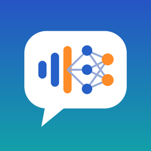

내 목소리
"내 목소리"는 구음장애(말장애)가 있는 사람이 자기 목소리로 문장을 읽어 녹음하고, 그 녹음으로 나만의 음성인식 모델을 학습할 수 있게 돕는 iPhone·iPad 앱이에요. 녹음은 기기에만 저장되고, 내가 직접 내보낼 때만 밖으로 나가요.
자주 묻는 질문
녹음은 어디에 저장되나요?
이 기기 안에만 저장돼요. 서버나 계정이 없어요.
학습은 어떻게 하나요?
현황 탭 → "학습 패키지 만들기"로 ZIP을 만들고, Google Drive에 올려 들어 있는 Colab 노트북을 위에서부터 실행해요. 막히면 ZIP 안의 AI_GUIDE.md를 AI 도우미에게 붙여 넣으세요.
몇 문장을 녹음해야 하나요?
평가 문장 50개를 먼저 녹음하고, 학습 문장 150~300개면 첫 학습을 해 볼 수 있어요. 많을수록 좋아져요.
기기를 바꾸면요?
학습 패키지 ZIP이 백업이에요. 새 기기에서 설정 → "학습 패키지(백업)에서 되돌려 넣기"를 눌러요.
의료 기기인가요?
아니요. 진단이나 치료를 하지 않는 소통 보조 도구예요.
English
My Voice helps people with dysarthria record their own speech and export it, together with a Google Colab notebook, to fine-tune a personal speech-recognition model. No servers, no accounts, no analytics. For support, please open an issue on GitHub.